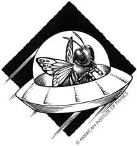

Bits and Pieces
News from the field: Killer bees, missile silos, and sonic suds
ORWELL, VERMONT, TOWN MANAGER NOEL Smith had a problem one day last spring: How to keep the town's cemetery tidy while keeping within his budget. After receiving proposals from several landscaping companies (average tab for the summer would run $3,000 for the men and their machines), Smith hired his low bidder. For a mere $250, Jean Beck promised a 2 1/2" trim and ideal employees: They didn't mind working in the abundant poison ivy, never took coffee breaks, and not only bagged grass clippings, they ran on them. Knowing she sounded too good to be true, Beck sheepishly confessed that her employees were, well, sheep. Seventeen Dorset sheep to be exact. Saving the city a bundle, Beck agreed to shepherd the ovine groundskeepers between the town's two cemeteries, charging only $10 an hour for the commute. And as for the sheep, their only request was a barrel of water and the all-they-could-eat burdock buffet, making them quite a baaargin.
His problem solved, Smith went home happy. Enter in 43 Orwell residents. Seems some folks didn't fancy Smith's four-footed foliage fighters and deemed the Dorsets "disrespectful." A petition circulated, gathering over 136 signatures, and a town hall protest attracted 20 objectors.
Although Smith was taken aback by the protest, he didn't expect things to turn ugly: "First there was an incident where the fencing around the sheep got cut, allowing them to escape to the road." Then the threats began. Seems the more militant of the protestors ordered a hit on the sheep and Smith received anonymous calls telling him that, in no uncertain terms, a gunman was about to set his sights on the cemetery. The town selectmen called a special vote and fired the sheep before the sheep were fired upon.
By the time the dust settled, the tiny town and its Dorset denizens had attracted so much national attention that owner Beck commissioned T-shirts supporting her mowing mammals. The 100% cotton T-shirt shows a photo of the sheep grazing on the front; the back boasts the battle cry "Let the Sheep Eat in Peace." They are available in medium, large, extra large, and extra-extra large. Send $15 (cost includes all postage and handling) to Sheep T-shirt c/o Jean Beck P.O. Box 103, Orwell, VT 05760. Two dollars from every sale is donated to a group doing cemetery preservation work.
Who is mowing now that the plots have thickened and the sheep have been shorn from duty? "Some of the protestors have been told to take charge of clipping," reports Smith.
And for the sheep? They are resting in peace back with owner Jean Beck.
Time was when a silo had a strictly agricultural purpose. Then, in the early `60s, the military appropriated the word (and the engineering) for its own nasty intentions. In 1962, at the height of the Cuban missile crisis, it constructed 12 concrete-lined underground silos-each up to 174 feet deep and 52 feet in diameter-at strategic sites across upper New York State and northwestern Vermont, fitted each silo with an Atlas missile, and then tilted the doomsday devices toward the Commie nemesis 6,000 miles away. Three years later, America's bionic missile establishment produced the Titan missile, rendering the Atlases, and their comfy silos, obsolete. For the past 25 years the silos have housed nothing but stagnant water.
Last fall, a nonprofit New York gallery, The Storefront for Art and Architecture, sought practical suggestions for recycling the underground structures, and got some. Included in the schemes were plans for transforming the silos into poetry libraries, parking garages, giant musical instruments, incarceration tanks for belligerent world leaders, chapels, solar-powered plants, and cesspools. The most off-the-wall plan called for linking the 12 sites in a "Nuclear Heritage Park" that would display weapons systems from around the world, offer visitors missile rides with a "spectacular splashdown in Lake Champlain," and feature a nightclub replica of the Pentagon's war room.
The more prosaic plans called for turning the silos into hydroponic gardens and mushroom farms-which, in addition to their simplistic beauty, would liberate the use of the word silo from the military once and for all.
For all you catalog collectors-and we know you're legion-something on the order of a dream: the second annual National Directory of Catalogs. The catalog of all catalogs, literally, this 700-page tome costs $195 (mention MOTHER and you'll receive it at the introductory price of $145) and lists over 7,000 catalogs in the United States and Canada. From API Outdoors Inc. ("America's leader in tree-stand technology") to Zen Home Stitchery (custom-made meditation clothing), this edition covers everything from mom-and-pop speciality houses to industrial biggies offering apparel and accessories to gardening supplies, hardware, and sporting goods.
As if that's not enough, the publisher is even offering a free 30-day examination of the book. For further information, write: The National Directory of Catalogs, 150 Fifth Ave., Suite 302, New York, NY 10011; or call (212) 741-0231, ext. 203.
And if you're interested in maximizing your tax dollars, order the Consumer's Resource Handbook from the U.S. Office of Consumer Affairs. It tells you how to solve just about any consumer problem, from getting warranties honored to finding a dealer to service your vacuum cleaner. The handbook is free, and when you order one the Feds throw in a copy of the Consumer Information Catalog, which lists about 200 free and low-cost consumer publications available from the United States government. Order from: Handbook, Consumer Information Center, Pueblo, CO 81009.
The worst stage of any home-improvement job, some of us here would argue, is painting and the Department of Health and Human Services would agree. Though lead is no longer allowed in paint, it still poses a danger to children who eat old lead-paint chips or to people who sand lead-painted walls in a poorly ventilated space.
And now the Environmental Protection Agency has done its part for good excuses to put off painting projects: An investigation revealed potentially hazardous levels of mercury present in paint. The mercury question became of such concern that the EPA banned its use as a preservative in outdoor latex without even completing the study. One year ago the EPA ordered manufactures to take the toxin out of interior latex after a four-year-old Michigan boy
suffered from mercury poisoning after 17 gallons of paint containing excessive quantities of mercury were applied to the inside of his parents' home when the windows were closed. Previously, neither the presence nor the concentration of mercury in latex paint was required to be labeled on the can. By the end of September 1991, all paint dealers must mark cans containing mercury, but for the moment, they are allowed to sell tainted leftover batches. Wise advice from the EPA's A1 Heier: "Check the label for mercury and then ask your supplier when the can came in." Studies are now underway to check the occupational hazards posed to housepainters and possible ground-water contamination from years of mercury-painted home runoff. Yikes.
Each U.S. farmer now provides 128 people with food and fiber-up from 123 a year ago. That includes 94 people in the United States and 34 abroad.
That alien spacecraft you and your friends witnessed hovering just beyond the pond this summer might actually have been a vast swarm of nocturnal migrating insects, says Dr. Phillip Callahan, a biophysicist. Callahan hit on his theory after he placed insects in an electrical field and discovered that they emitted a visible light, called a corona discharge.
Many insects species migrate after dusk, often riding the winds of a storm front, which has the electrical conditions to make the insects glow eerily in the night sky.
The shape of an insect swarm also seems to fit the popular configuration of a UFO.
According to Callahan, insect swarms emit luminous blue, green, and yellow light, adding to the extraterrestrial aura of their flight. In one test, he checked the migration of moths in Utah against UFO sightings. "There was a perfect match in place and time between the UFO sightings and the migration of spruce budworm moths," says Callahan. "I'm convinced that a lot of night sightings are just lit-up insects riding storm fronts."
Ten years ago, you painted the kitchen a sort of peach color. It was called something like Heather's Mist, or maybe, Baby's Breath, or ...whatever. Anyway, you like the color and would like to duplicate it. The whole job took about four gallons, or was it six? You know you did the job 10 years ago because it was right after you replaced the burner in your furnace, and the burner only lasts about 10 years, if you remember correctly. Meaning, it's about time to replace the burner. Or is it?
Keeping track of home maintenance can be a full-time job, and now there's a diary to help you. The Home Owner's Journal: What 1 Did & When I Did It is a great organizational tool for recording all those details about home improvement and maintenance you're happy to forget about after the job is done. The book, which uses a simple fill-in-the-blank format, contains a chapter for every room in the house, as well as for the deck and patio, cooling and heating units, and garage and driveway. It's available for $9.95 plus $2 shipping from Blue Sky Marketing, PO. Box 21583-176, St. Paul, MN 55121; 800-444-5450.
Talk about cleaning power. Last year Northwest Airlines grounded a dozen of its DC-9s after a mechanic serving one of the jets noticed the hydraulic fluid had a strange texture. It turns out the planes had b een flying for 10 days with a mixture of hand soap and hydraulic fluid in the hydraulic system. No reports on what was being dispensed in the cabin lavatories.
"This 'killer bee' thing is a creation of the popular press."
They came in the night, buzzing like a swarm of chain saws over the torpid water of the Rio Grande, while a defenseless America slept, unaware that one of the most horrifying films of the `70s was about to become real life: Killer bees had finally arrived! But sleeping, according to one expert, was an entirely appropriate reaction.
"This `killer bee' thing is a creation of the popular press," says Roger Morse, professor of agriculture at Cornell University. "It's all a great big humbug." Dr. Morse, who has worked with the bees in Africa and Brazil, says that they are slightly more aggressive than European breeds, but are good pollinators, good honey-makers, and best of all, they are resistant to many diseases that now plague apiaries in the United States.
The first Africanized bees were trapped last October in Hidalgo, Texas, a small border town in the lower Rio Grande Valley. Researchers at the USDA's Honey Bee Research Laboratory in nearby Weslaco had been expecting the bees since a swarm was trapped 150 miles south of Brownsville, in the northern Mexico border state of Tamaulipas, in 1989. The bees have been moving northward since they escaped from a breeding experiment in Brazil in 1957. Their tendency to attack en masse when threatened earned them the nickname "killer bees," and several hundred people in Central and South America have reportedly died from these attacks.
Morse downplays the danger and says that beekeepers can work with Africanized bees if they follow a few precautions: Give the bees plenty of room in the hives, adding supers (upper stories) before the nectar begins to flow; use larger smokers and don p rotective clothing before entering the apiary; and use care in selecting the apiary site.
"They're basically good bees," Morse says."The Brazilians are getting more honey now than ever."
Revenge of the Killer Bees II
John Reeves, an amateur beekeeper and a diabetic, was sitting in a chair at his Tennessee home, watching his bees when he had an insulin reaction and kicked the hive.
About 1,000 bees swarmed him and "covered him from head to toe, said Assistant Fire Chief Gordon Lane, who lead a rescue effort of firefighters wearing aluminum gear. Nursing supervisor Pat Hollifield, of North Side Hospital in Johnson City, Tennessee, called Reeves lucky to be alive. His face was white with stingers. A team of hospital workers plucked stingers for three hours. He vomited quite a few. One came out of his ear when they brought him in, said nurse Brenda Egan.
Reeves, 66, spent weeks in intensive care. His wife, Elise, called the attack "a nightmare" but said that Reeves, an amateur beekeeper for over 15 years, intends to keep his bees.
Do you have interesting, informative, or timely news from the field you'd like to share with otherMOTHER readers? Please send your newspaper clippings, press releases, photos, or true tales to "Bits & Pieces, " MOTHER EARTH NEWS, P.O. Box 129, Arden, North Carolina 28704.
|
|
|
|
|
 |
|
|